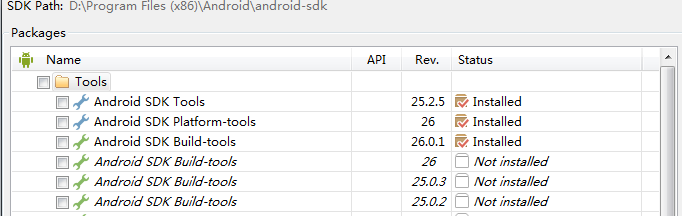

Android 配置¶
java JDK安装
android SDK安装¶
下载地址：
https://dl.google.com/android/installer_r24.4.1-windows.exe
下载后安装.默认会启动 Android SDK Manager 建议安装到其他盘(api等工具安装占用空间大)
设置ANDROID_HOME环境变量（默认路径）:D:\Program Files (x86)\Android\android-sdk
增加系统变量：;%ANDROID_HOME%\platform-tools;%ANDROID_HOME%\tools;
